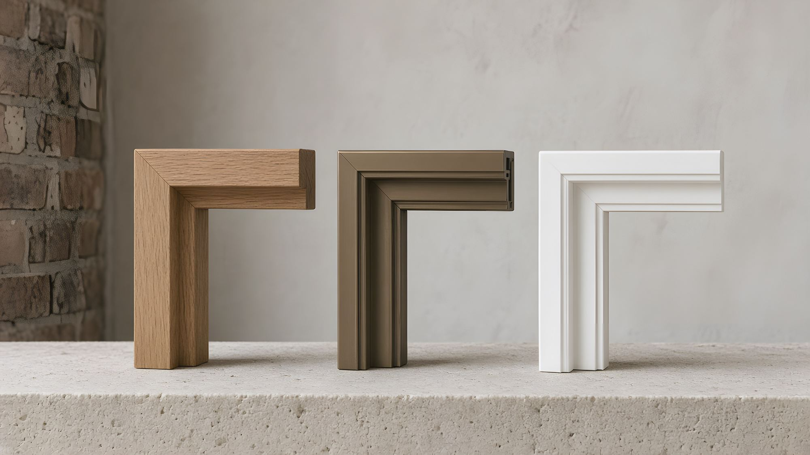

Aluminium, timber or PVC? It depends on the building, and we’ll say so.
We make all three, plus timber-aluminium, so we have no reason to push one. Below is how they really compare, and a short advisor that suggests a material for your project in three questions.

Aluminium, timber or PVC: how do they compare?
General figures for windows and doors in London homes. Product pages give typical ranges per product, and your quotation gives certified values.
| Aluminium | Timber | PVC | Timber-aluminium | |
|---|---|---|---|---|
| Thermal performance | Good, with a thermal break | Very good | Very good | Very good |
| Sightlines | Slimmest | Medium | Widest | Medium |
| Largest panes | Very large; panels to 400 kg | Large | Moderate | Large |
| Upkeep | Wash twice a year | Recoat every 6–10 years | Wash twice a year | Wash outside; inside as furniture |
| Typical service life | 40 years or more | 40–60 years, maintained | 25–35 years | 40 years or more |
| Colours | Any RAL | Any paint or stain | Foils and set colours | Timber inside, RAL outside |
| Planning in sensitive areas | Case by case | Usually preferred | Often resisted | Case by case |
| End of life | Highly recyclable | Renewable if FSC-certified | Recyclable through take-back schemes | Separable and recyclable |
Which material suits which London house?
These are starting points, not rules. Your building, your planning officer and your budget can all change the answer.
Timber sashes at the front, aluminium at the back
Planners care about the street, especially in a conservation area. A timber front and a large aluminium slider into the garden is one of the most common combinations we draw.
Timber, PVC or aluminium casements
Usually no conservation constraint. Choose by budget and looks, and keep the original window proportions.
Aluminium throughout
Slim frames, big glass, one colour across windows, doors and curtain walling, and a straightforward route through Parts L, O and Q.
PVC where it’s allowed
The best value per opening and almost no upkeep, provided the building isn’t listed or covered by an Article 4 direction.